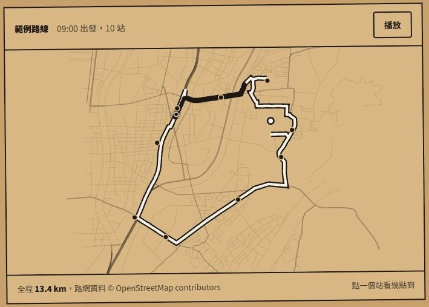
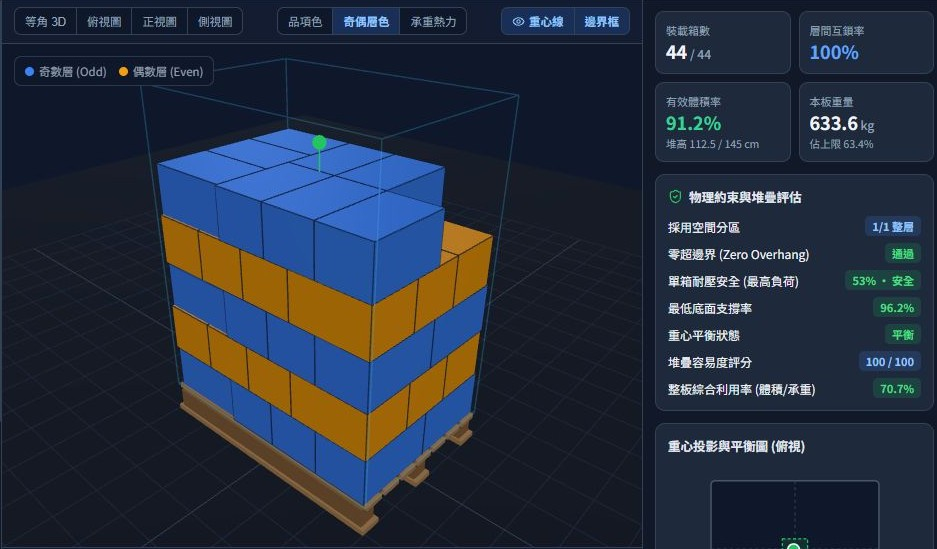

畢業專題
物流作業標準化輔助系統
把「優先客戶希望提早收貨」量化為期望送達時間與逾時懲罰，納入求解目標，讓系統權衡服務優先順序與行駛成本。
我負責後端、路線演算法與情境測試，整合輸入驗證、行車時間矩陣與快取，處理客戶改約和配送途中新增訂單。
查看測試案例與設計取捨
在一組對照測試中，提高指定客戶的優先級後，該客戶由第 8 站提前至第 3 站，行駛時間由 33.1 分鐘增至 37.7 分鐘。兩組都沒有等待或遲到。這個案例呈現提早服務指定客戶所增加的行駛成本。

畢業專題
把「優先客戶希望提早收貨」量化為期望送達時間與逾時懲罰，納入求解目標，讓系統權衡服務優先順序與行駛成本。
我負責後端、路線演算法與情境測試，整合輸入驗證、行車時間矩陣與快取，處理客戶改約和配送途中新增訂單。
在一組對照測試中，提高指定客戶的優先級後，該客戶由第 8 站提前至第 3 站，行駛時間由 33.1 分鐘增至 37.7 分鐘。兩組都沒有等待或遲到。這個案例呈現提早服務指定客戶所增加的行駛成本。

Side Project
設計奇偶層互鎖機制，依棧板尺寸與貨箱規格調整各層的擺放方向與排列，使上層箱體跨接多個下層箱體，並檢查底面支撐率。
先以 Python 開發裝箱原型，再用 AI 輔助將求解邏輯移植至 TypeScript，讓使用者在網頁上規劃多品項混裝並查看逐箱堆疊順序。
在 Vitest 的 1,920 箱測試案例中，全數箱件完成分配，各棧板通過程式內的約束檢查。

國立勤益科技大學資訊工程系
預計 2027 年 6 月畢業
數位電子乙級、工業電子丙級、電腦軟體應用丙級
曾任資工系學會活動總召或副召，負責人員安排、排程與進度追蹤。